EQUITY IMPLIED VOLATILITY
REMOVE STOCHASTIC INTEREST RATE EFFECT
The main purpose of this class is to remove the effect of stochastic interest rates from an equity implied volatility number given a calibration of the One Factor Hull-White Model or to add the effect of stochastic interest rates to an idiosyncratic volatility number
Supporting documentation is the following: O:\01 Pillar I Risk Measurement\05 Deliverables - RSG\03 Implementation\Industrialisation\Data \Market Data Pack\Equity IV extrap Equity Implied Vol One & Two Factor Hull White V3.docx
Contents
%MATLAB CODE %%%%%%%%%%%%%%%%%%%%%%%%%%%%%%%%%%%%%%%%%%%%%%%%%%%%%%%%%%%%%%%%%%%%%%%%%%% classdef bsEquityIV_1FHW_StochRateEffect
How to Use the Class
There are two ways to use the class:
- Given a spot implied volatility, we can remove the effect of stochastic interest rates from the spot implied volatility to give the idiosyncratic volatility using the function [FindEquityVol()]. Function [FindEquityVolSurface()] returns a spot volatility surface.
- Given an idiosyncratic volatility, we can add the effect of stochastic interest rates to it to give an equity implied volatility using the function [GetEquityImpliedVol()]. A surface can be constructed through [GetEquityImpliedVolSurface()]. Function [GetLimitingEquityImpliedVol()] estimates the limiting volatility.
Properties
These are global parameters which are available to all methods in this class. They are all single values.
[dblIRMeanReversionSpeed] - Rate 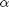 at which the short rate reverts back to mean
[dblIRVolatility] - Interest rate volatility 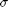
[dblEquity_IR_Correlation] - Correlation 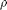 between equity and interest rate
%MATLAB CODE %%%%%%%%%%%%%%%%%%%%%%%%%%%%%%%%%%%%%%%%%%%%%%%%%%%%%%%%%%%%%%%%%%%%%%%%%%% properties dblIRMeanReversionSpeed dblIRVolatility dblEquity_IR_Correlation end %%%%%%%%%%%%%%%%%%%%%%%%%%%%%%%%%%%%%%%%%%%%%%%%%%%%%%%%%%%%%%%%%%%%%%%%%%%
List of Methods
This bootstrap class introduces the following methods:
1) [GetEquityImpliedVolSurface()] - Function returns an equity implied volatility surface with "maturity" against "moneyness". Volatility values are calculated using the function [GetEquityImpliedVol()]
2) [GetEquityImpliedVol()] - Function calculates an implied spot volatility given the parameters of the One Factor Hull-White Model and the idiosyncratic equity volatility [dblEquityVolatility]
3) [GetLimitingEquityImpliedVol()] - Function calculates a limiting spot equity volatility as time to maturity approaches infinity. The calculated value will equal to the forward equity volatility as time to maturity approaches infinity
4) [FindEquityVolSurface()] - Function returns an idiosyncratic volatility surface with "maturity" against "moneyness". Volatility values are calculated using the function [FindEquityVol()]
5) [FindEquityVol()] - Function removes the effect of stochastic interest rates from an implied spot volatility and the resulting volatility is called the idiosyncratic volatility
6) [Integral3()] - Function calculates the value of 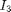 in the "Total Variance" formula. See [GetEquityImpliedVol()] for details of the formula
7) [Integral4()] - Function calculates the value of 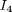 in the "Total Variance" formula. See [GetEquityImpliedVol()] for details of the formula
8) [auxillaryFunction1] - Function helps to calculate and
%MATLAB CODE %%%%%%%%%%%%%%%%%%%%%%%%%%%%%%%%%%%%%%%%%%%%%%%%%%%%%%%%%%%%%%%%%%%%%%%%%%% methods
function obj = bsEquityIV_1FHW_StochRateEffect(IRMeanReversionSpeed,... IRVolatility, Equity_IR_Correlation) obj.dblIRMeanReversionSpeed = IRMeanReversionSpeed ; obj.dblIRVolatility =IRVolatility; obj.dblEquity_IR_Correlation =Equity_IR_Correlation; end %%%%%%%%%%%%%%%%%%%%%%%%%%%%%%%%%%%%%%%%%%%%%%%%%%%%%%%%%%%%%%%%%%%%%%%%%%%
Details of Methods
_______________________________
1) [GetEquityImpliedVolSurface()]
'''''''''''''''''''''''''''''''''''''''''''''''''''''''''''''''''''''''''''''''''''''
Description
Function returns an equity implied volatility surface with "maturity" against "moneyness". For each maturity and each moneyness, we calculate an implied spot volatility value using the function [GetEquityImpliedVol()].
Inputs
[dblEquityVolSurface] - A surface of idiosyncratic volatilites with "maturity" against "moneyness"
Data Type: 2-dim array
[dblTimeToMaturity] - 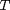, time to maturity of the equity option
Data Type: single value
Outputs
An implied volatility surface with "maturity" against "moneyness"
Data Type: 2-dim array
Calculation
Set up the matrix with the same size and the same row and column titles as the [dblEquityVolSurface]
We then calculate the equity implied volality using the function [GetEquityImpliedVol()]. See [GetEquityImpliedVol()] for calculation details
%MATLAB CODE %%%%%%%%%%%%%%%%%%%%%%%%%%%%%%%%%%%%%%%%%%%%%%%%%%%%%%%%%%%%%%%%%%%%%%%%%%% function y=GetEquityImpliedVolSurface(obj, dblEquityVolSurface,... dblTimeToMaturity) assert(size(dblEquityVolSurface,1) == size(dblTimeToMaturity,2)); y = zeros(size(dblEquityVolSurface)); for i =1 : size(dblEquityVolSurface,1) for j =1 : size(dblEquityVolSurface,2) y(i,j) = obj.GetEquityImpliedVol(dblEquityVolSurface(i,j),... dblTimeToMaturity(1,i)); end end return end %%%%%%%%%%%%%%%%%%%%%%%%%%%%%%%%%%%%%%%%%%%%%%%%%%%%%%%%%%%%%%%%%%%%%%%%%%%
_______________________________
2) [GetEquityImpliedVol()]
'''''''''''''''''''''''''''''''''''''''''''''''''''''''''''''''''''''''''''''''''''''
Description
Function calculates the equity implied volatility given the parameters of the One Factor Hull-White Model and the idiosyncratic equity volatility [dblEquityVolatility]
Inputs
[dblEquityVolatility] - idiosyncratic spot volatility
Data Type: single value
[dblTimeToMaturity] - , time to maturity of the equity option
Data Type: single value
Outputs
Equity implied spot volatility
Data Type: single value
Calculations
Equity implied volatility can be estimated using the formula,
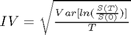
where
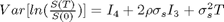
is the measurement of "Total Variance" of the log-return from time 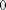 to time , namely [dblTotalEquityVariance]
and are values calculated using the functions [Integral3()] and [Integral4()]
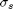 is the idiosyncratic equity volatility [dblEquityVolatility], i.e. implied spot volatilities with the effect of stochastic interest rates stripped out.
See function [FindEquityVol()] for details of the "stripping" process.
%MATLAB CODE %%%%%%%%%%%%%%%%%%%%%%%%%%%%%%%%%%%%%%%%%%%%%%%%%%%%%%%%%%%%%%%%%%%%%%%%%% function y=GetEquityImpliedVol(obj, dblEquityVolatility,... dblTimeToMaturity) I3 = obj.Integral3(dblTimeToMaturity); I4 = obj.Integral4(dblTimeToMaturity); dblTotalEquityVariance = I4 + 2 * obj.dblEquity_IR_Correlation... * dblEquityVolatility * I3 + dblEquityVolatility ^ 2 ... * dblTimeToMaturity ; y = sqrt(dblTotalEquityVariance / dblTimeToMaturity) ; return end %%%%%%%%%%%%%%%%%%%%%%%%%%%%%%%%%%%%%%%%%%%%%%%%%%%%%%%%%%%%%%%%%%%%%%%%%%
_______________________________
3) [GetLimitingEquityImpliedVol()]
'''''''''''''''''''''''''''''''''''''''''''''''''''''''''''''''''''''''''''''''''''''
Description
Function calculates the limiting equity volatility when time to maturity approaches infinity and it equals to the forward volatility over the future period quantity.
Inputs
[dblEquityVolatility] - idiosyncratic spot volatility
Data Type: single value
Outputs
The limiting equity implied spot volatility as time to maturity approaches infinity
Data Type: single value
Calculations
As 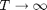
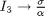
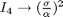
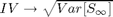
where
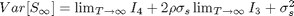
%MATLAB CODE %%%%%%%%%%%%%%%%%%%%%%%%%%%%%%%%%%%%%%%%%%%%%%%%%%%%%%%%%%%%%%%%%%%%%%%%%%% function y = GetLimitingEquityImpliedVol(obj, dblEquityVolatility ) I3 = (obj.dblIRVolatility / obj.dblIRMeanReversionSpeed) ; I4 = (obj.dblIRVolatility / obj.dblIRMeanReversionSpeed) ^ 2; dblAnnulaisedEquityVariance = I4 + 2 * obj.dblEquity_IR_Correlation... * dblEquityVolatility * I3 + dblEquityVolatility ^ 2; y = sqrt(dblAnnulaisedEquityVariance); end %%%%%%%%%%%%%%%%%%%%%%%%%%%%%%%%%%%%%%%%%%%%%%%%%%%%%%%%%%%%%%%%%%%%%%%%%%%
_______________________________
4) [FindEquityVolSurface()]
'''''''''''''''''''''''''''''''''''''''''''''''''''''''''''''''''''''''''''''''''''''
Description
Simlar to [GetEquityImpliedVolSurface()], function returns a volatility surface with "maturity" against "moneyness". However, for each maturity and each moneyness, the value is the idiosyncratic volatility that is calculated using the function [FindEquityVol()].
Inputs
[dblEquityIVSurface] - a surface of equity implied spot volatilites with "maturity" against "moneyness"
Data Type: 2-dim array
[dblTimeToMaturity] - , time to maturity of the equity option
Data Type: single value
Outputs
An idiosyncratic spot volatility surface with "maturity" against "moneyness"
Data Type: 2-dim array
Calculation
Set up the matrix with the same size and the same row and column titles as the [dblEquityIVSurface]
We then calculate the idiosyncratic Volatility using the function [FindEquityVol()]. See [FindEquityVol()] for calculation details
%MATLAB CODE %%%%%%%%%%%%%%%%%%%%%%%%%%%%%%%%%%%%%%%%%%%%%%%%%%%%%%%%%%%%%%%%%%%%%%%%%%% function y = FindEquityVolSurface(obj, dblEquityIVSurface,... dblTimeToMaturity) assert(size(dblEquityIVSurface,1) == size(dblTimeToMaturity,2)); y = zeros( size(dblEquityIVSurface)); for i =1 : size(dblEquityIVSurface,1) for j =1 : size(dblEquityIVSurface,2) y(i,j) = obj.FindEquityVol(dblEquityIVSurface(i,j), ... dblTimeToMaturity(1,i)); end end return end %%%%%%%%%%%%%%%%%%%%%%%%%%%%%%%%%%%%%%%%%%%%%%%%%%%%%%%%%%%%%%%%%%%%%%%%%%%
_______________________________
5) [FindEquityVol()]
'''''''''''''''''''''''''''''''''''''''''''''''''''''''''''''''''''''''''''''''''''''
Description
Function removes the effect of stochastic interest rates from equity implied spot volatilities and calculates idiosyncratic volatilities. This is the reverse process to the function [GetEquityImpliedVol()], where idiosyncratic equity volalities are converted to equity implied spot volatilities.
Inputs
[dblEquityIVTarget] - 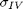, equity implied spot volatility
Data Type: single value
[dblTimeToMaturity] - , time to maturity of the equity option
Data Type: single value
Outputs
An idiosyncratic volatility
Data Type: single value
Calculations
We have seen in [GetEquityImpliedVol()], an equity implied spot volatility is calculated using the formula
Here
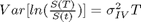
Substituting into the previous equation and rearranging, we then have a quadratic equation of the idiosyncratic volatily
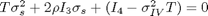
To find the value of , we can solve the quadratic equation
To see if there exists a solution, calculate 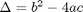
where
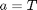
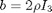
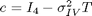
If 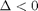,
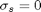
If 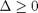,
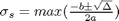, subject to a minimum of zero
%MATLAB CODE %%%%%%%%%%%%%%%%%%%%%%%%%%%%%%%%%%%%%%%%%%%%%%%%%%%%%%%%%%%%%%%%%%%%%%%%%%% function y = FindEquityVol(obj, dblEquityIVTarget , dblTimeToMaturity ) % Step 0 initialise I3 = obj.Integral3( dblTimeToMaturity); I4 = obj.Integral4(dblTimeToMaturity); dblTotalEquityVariance = (dblEquityIVTarget ^ 2 * dblTimeToMaturity); % Step 1 calculate solution of the quadratic a = dblTimeToMaturity; b = 2 * (obj.dblEquity_IR_Correlation) * I3; c = (I4 - dblTotalEquityVariance); d = b ^ 2 - 4 * a * c; % If no real solution exist, return zero, else choose the positive % solution if d < 0 y = 0; % Minimum (Lower Bound) equity volatility return else dblSolution1 = max(0, (-b + sqrt(d)) / (2 * a)); dblSolution2 = max(0, (-b - sqrt(d)) / (2 * a)); y = max(dblSolution1, dblSolution2); end end %%%%%%%%%%%%%%%%%%%%%%%%%%%%%%%%%%%%%%%%%%%%%%%%%%%%%%%%%%%%%%%%%%%%%%%%%%%
Auxillary Functions
_______________________________
6) [Integral3()]
'''''''''''''''''''''''''''''''''''''''''''''''''''''''''''''''''''''''''''''''''''''
Description
Function calculates which is substituted into the "Total Variance" formula of [GetEquityImpliedVol()]
Inputs
[dblTimeToMaturity] - , time to maturity of the equity option
Data Type: single value
Outputs
Data Type: single value
Calculations
Let
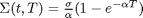
Integrate 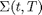, we get
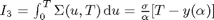
where 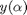 is calculated using the [auxillaryFunction1]
See [auxillaryFunction1] for details
%MATLAB CODE %%%%%%%%%%%%%%%%%%%%%%%%%%%%%%%%%%%%%%%%%%%%%%%%%%%%%%%%%%%%%%%%%%%%%%%%%%% function y =Integral3(obj, dblTimeToMaturity ) dblTerm1 = -obj.auxillaryFunction1(obj.dblIRMeanReversionSpeed, ... dblTimeToMaturity); y = (obj.dblIRVolatility / obj.dblIRMeanReversionSpeed ) * ... (dblTimeToMaturity + dblTerm1); end %%%%%%%%%%%%%%%%%%%%%%%%%%%%%%%%%%%%%%%%%%%%%%%%%%%%%%%%%%%%%%%%%%%%%%%%%%%
_______________________________
7) [Integral4()]
'''''''''''''''''''''''''''''''''''''''''''''''''''''''''''''''''''''''''''''''''''''
Description
Similar to [Integral3()], function calculates which is substituted into the "Total Variance" formula we have seen in [GetEquityImpliedVol()]
Inputs
[dblTimeToMaturity] - , time to maturity of the equity option
Data Type: single value
Outputs
Data Type: single value
Calculations
Let
Integrate 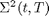, we get
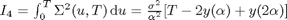
where and 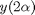 are calculated using the [auxillaryFunction1]
See [auxillaryFunction1] for details
%MATLAB CODE %%%%%%%%%%%%%%%%%%%%%%%%%%%%%%%%%%%%%%%%%%%%%%%%%%%%%%%%%%%%%%%%%%%%%%%%%%% function y = Integral4(obj, dblTimeToMaturity) dblTerm1 = -obj.auxillaryFunction1(obj.dblIRMeanReversionSpeed,... dblTimeToMaturity); dblTerm2 = obj.auxillaryFunction1(2*(obj.dblIRMeanReversionSpeed),... dblTimeToMaturity); y = (obj.dblIRVolatility / obj.dblIRMeanReversionSpeed ) ^ 2 * ... (dblTimeToMaturity + 2 * dblTerm1 + dblTerm2); end %%%%%%%%%%%%%%%%%%%%%%%%%%%%%%%%%%%%%%%%%%%%%%%%%%%%%%%%%%%%%%%%%%%%%%%%%%%
_______________________________
8) [auxillaryFunction1]
'''''''''''''''''''''''''''''''''''''''''''''''''''''''''''''''''''''''''''''''''''''
Description
Function helps to calculate and
Inputs
[dblmeanreversionspeed] - Rate at which the short rate reverts back to mean
Data Type: single value
[dblTimeToMaturity] - , time to maturity of the equity option
Data Type: single value
Outputs
The value that is used in the calculation of and
Data Type: single value
Calculations
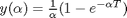
%MATLAB CODE %%%%%%%%%%%%%%%%%%%%%%%%%%%%%%%%%%%%%%%%%%%%%%%%%%%%%%%%%%%%%%%%%%%%%%%%%%% function y =auxillaryFunction1(obj, dblmeanreversionspeed, ... dblTimeToMaturity ) y = (1 - exp(-dblmeanreversionspeed * dblTimeToMaturity)) / ... dblmeanreversionspeed; end %%%%%%%%%%%%%%%%%%%%%%%%%%%%%%%%%%%%%%%%%%%%%%%%%%%%%%%%%%%%%%%%%%%%%%%%%%%
end
end